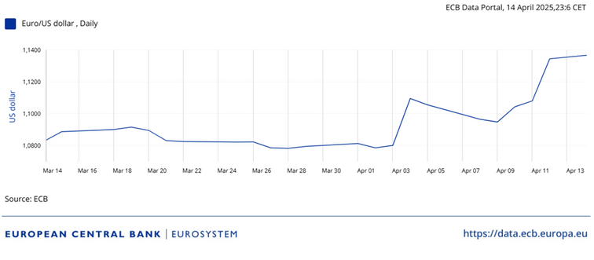

Uncovered Interest Parity is a basic concept in international economics that explains the expected return difference between two countries' currencies. According to UIP, exchange rates adjust in a way that the currency with the higher interest rate is expected to depreciate in the future, offsetting the interest rate gap.
So basically, if Türkiye's interest rate is higher than the U.S. rate, the Turkish Lira (TL) is expected to lose value over time. This way, under the no-arbitrage conditions, the higher interest rate is balanced by the expected depreciation of the currency. This relationship between interest rates and expected exchange rate movements can be formally expressed through the Uncovered Interest Parity (UIP) formula:
R$: Dollar's interest rate · R€: Euro's interest rate · Ee$/€: Expected exchange rate · E$/€: Exchange rate
The puzzle: when UIP breaks down
In a global economy, trade barriers can have a significant short-term impact on a country's currency and economic conditions.
However, in the USA, even though the interest rate is increasing, the US Dollar has depreciated around 4.3% in the last month. This is the opposite of what the theory predicts. Why has this happened? After the announcement of high tariff rates in the USA, people started selling dollars. This reduced demand for U.S. dollars, and the dollar depreciated.
Tariffs over theory
Therefore, this shows that in a global economy, trade barriers can have a significant short-term impact on a country's currency and economic conditions. As can be seen in the exchange rate data, the dollar depreciated after the tariff announcement, demonstrating that policy shocks can override the predictions of traditional interest parity models.
